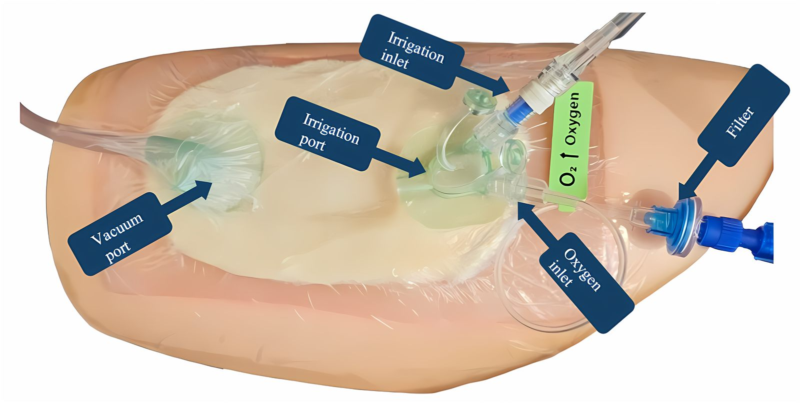

Regulated NPWT
Leading the future of wound healing with advanced, safe vacuum technologies
Vcare α® has transformed the landscape of Regulated Negative Pressure Wound Therapy (RNPT), setting new standards in advanced wound care.
Vcare α® has transformed the landscape of Regulated Negative Pressure Wound Therapy (RNPT), setting new standards in advanced wound care.

The Vcare α® was designed to provide pre-set, regulated negative pressure to open wounds with the intent to minimize the risk of bleeding, focusing on each patient's specific clinical needs.
It is equipped with specially designed, user-friendly software and electronics for bleeding detection and alarm control, complying with IEC-60601-1-8 standards.

Drawing on original scientific principles and extensive clinical experience, Vcare α® utilizes Regulated Oxygen-Enriched and Irrigation-Negative Pressure-Assisted Wound Treatment (ROINPT) to combat anaerobic infections through the strategic application of oxygen, while providing hydrodynamic wound cleansing.
RNPT is recognized as one of the most significant innovations in plastic surgery of the past two decades. Vcare α® extends it with unique safety features to ensure optimal performance, efficiency and the highest standard of patient care.
Related Publications →Contact our team for the full brochure, technical specifications and clinical guidance.